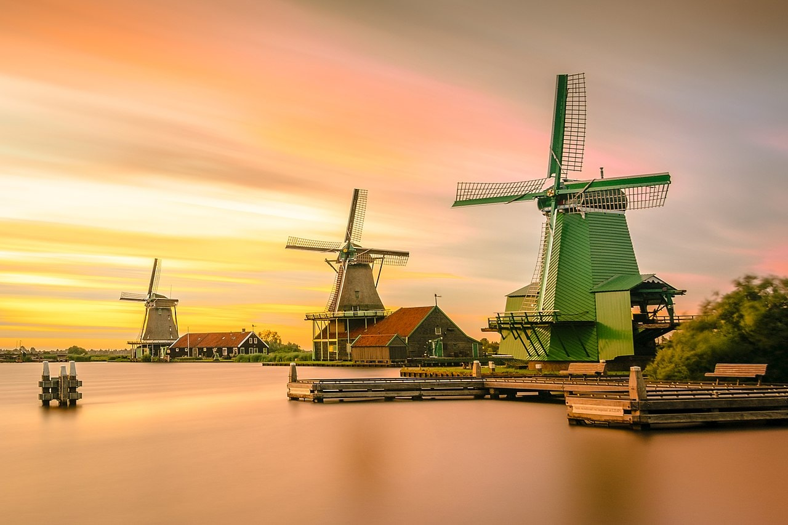
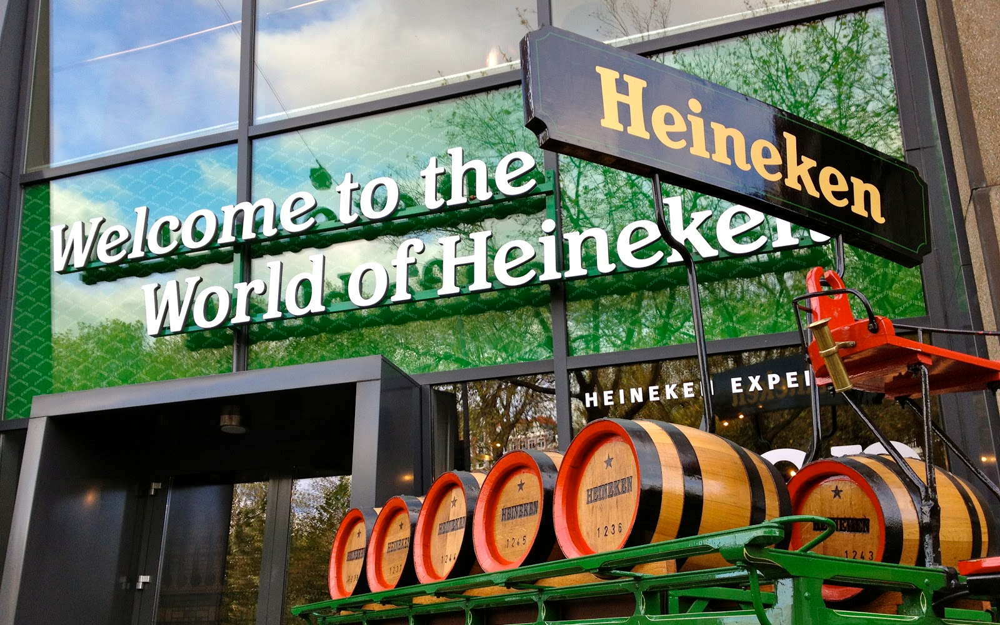

Netherlands 네덜란드
| 국가면적 | 수도 | 공용어 |
|---|---|---|
| 41,543㎢ | 암스테르담(Amsterdam) | 네덜란드어,프리슬란트어 |
네덜란드는 영국과 아일랜드를 제외하면 제1외국어로서 영어구사율이 90%로 가장 높은 나라입니다. 영어를 실생활에서 쓰고있기 때문에, 여행영어가 어느정도 가능하신 분이라면 여행하기 좋은 나라입니다. 인구 대비 자전거 보유수가 최고의 나라이기도 하며, 국토 대부분이 평지여서 자전거 도로 및 관련 인프라가 발달해있습니다. 그만큼 자전거 사고도 많기 때문에 도보를 걸으실 때에는 조심하시는 것이 좋습니다. 네덜란드의 상징 중 하나인 풍차는 풍력 에너지를 곡식을 빻는 방아에 사용할 수 있도록 고안한 것입니다. 암스테르담에서 멀지않은 풍차마을에 방문하시면 다양한 풍차의 모습을 볼 수 있습니다. 네덜란드 여행 시 놓치면 안되는 명소 3곳을 소개해드립니다.
1. 반 고흐 미술관

전 세계에서 반 고흐의 작품을 가장 많이 소장하고 있는 미술관으로, 한 해 관람객이 200만명에 이르는 관광명소입니다. 암스테르담 국립미술관, 마우리츠하위스와 함께 네덜란드 3대 미술관 중 하나로 손 꼽히는 곳입니다. 현재 반 고흐 미술관에서는 현대자동차의 후원으로 한국어 오디오 가이드를 제공하고 있습니다.
2. 풍차마을 잔세스칸스
암스테르담 중앙역에서 잔세스칸스 역까지 기차로 20분밖에 걸리지 않기 때문에 한나절이면 충분히 다녀올 수 있는 관광지입니다. 현재의 풍차마을은 1961년 잔(Zann) 지역을 재개발하면서 주변에 있던 풍차11개와 전통 가옥 35채를 모아 한국의 민속촌과 같은 네덜란드의 전통마을로 재현해 놓은 것이라 합니다.
3. 하이네켄 체험관
재료, 양조 과정 등을 하이네켄의 모든 것을 경험할 수 있는 테마 전시관입니다. 암스테르담 중심부에 위치해있어 접근성도 좋으며, 무료 맥주 시음권이 있기 때문에 맥주 애호가 분들에게는 놓치기 아까운 명소 중 한 곳입니다. 내부에는 미니 비어 파티를 즐길 수 있는 공간도 마련되어 있습니다.